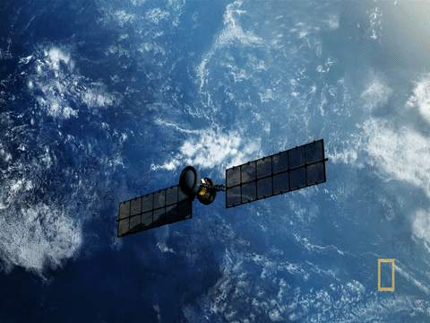

SPACE:
The world From the perspective of an Earthling, outer space is a zone that occurs about 100 kilometers (60 miles) above the planet, where there is no appreciable air to breathe or to scatter light. In that area, blue gives way to black because oxygen molecules are not in enough abundance to make the sky blue.  Further, space is a vacuum, meaning that sound cannot carry because molecules are not close enough together to transmit sound between them. That's not to say that space is empty, however. Gas, dust and other bits of matter float around "emptier" areas of the universe, while more crowded regions can host planets, stars and galaxies. No one knows exactly how big space is. The difficulty arises because of what we can see in our detectors. We measure long distances in space in "light-years," representing the distance it takes for light to travel in a year (roughly 5.8 trillion miles, or 9.3 trillion kilometers).From light that is visible in our telescopes, we have charted galaxies reaching almost as far back as the Big Bang, which is thought to have started our universe 13.7 billion years ago. This means we can "see" into space at a distance of almost 13.7 billion light-years. However, astronomers are not sure if our universe is the only universe that exists. This means that space could be a lot bigger than it appears to us.
THE BIG BANG THEORY:The Big Bang theory is the prevailing cosmological model explaining the existence of the observable universe from the earliest known periods through its subsequent large-scale evolution.The model describes how the universe expanded from an initial state of high density and temperature,and offers a comprehensive explanation for a broad range of observed phenomena, including the abundance of light elements, the cosmic microwave background (CMB) radiation, and large-scale structure. Crucially, the theory is compatible with Hubble–Lemaître law—the observation that the farther away a galaxy is, the faster it is moving away from Earth. Extrapolating this cosmic expansion backwards in time using the known laws of physics, the theory describes an increasingly concentrated cosmos preceded by a singularity in which space and time lose meaning (typically named "the Big Bang singularity"). Detailed measurements of the expansion rate of the universe place the Big Bang singularity at around 13.8 billion years ago, which is thus considered the age of the universe. After its initial expansion, an event that is by itself often called "the Big Bang", the universe cooled sufficiently to allow the formation of subatomic particles, and later atoms. Giant clouds of these primordial elements—mostly hydrogen, with some helium and lithium—later coalesced through gravity, forming early stars and galaxies, the descendants of which are visible today. Besides these primordial building materials, astronomers observe the gravitational effects of an unknown dark matter surrounding galaxies. Most of the gravitational potential in the universe seems to be in this form, and the Big Bang theory and various observations indicate that this excess gravitational potential is not created by baryonic matter, such as normal atoms. Measurements of the redshifts of supernovae indicate that the expansion of the universe is accelerating, an observation attributed to dark energy's existence. Georges Lemaître first noted in 1927 that an expanding universe could be traced back in time to an originating single point, which he called the "primeval atom". Edwin Hubble confirmed through analysis of galactic redshifts in 1929 that galaxies are indeed drifting apart; this is important observational evidence for an expanding universe. For several decades, the scientific community was divided between supporters of the Big Bang and the rival steady-state model which both offered explanations for the observed expansion, but the steady-state model stipulated an eternal universe in contrast to the Big Bang's finite age. In 1964, the CMB was discovered, which convinced many cosmologists that the steady-state theory was falsified, since, unlike the steady-state theory, the hot Big Bang predicted a uniform background radiation throughout the universe caused by the high temperatures and densities in the distant past. A wide range of empirical evidence strongly favors the Big Bang, which is now essentially universally accepted